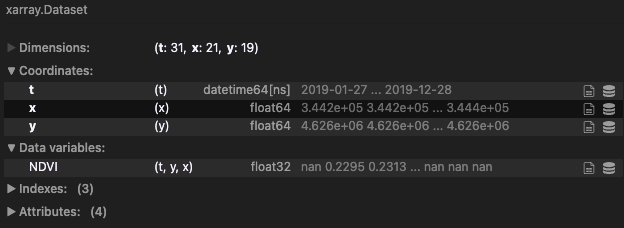

FuseTS Design¶
Core FuseTS algorithms are based on XArray to maximize interoperability with the Pangeo ecosystem. XArray Datasets and arrays are used as input and output types throughout the library.
FuseTS consist of multiple logical modules:
Core timeseries integration
Timeseries analysis
OpenEO integration
It tries to support multiple steps in EO data (pre-)processing. This is shown here as a flowchart and more graphically through a figure showing timeseries plots.
Timeseries processing steps¶
Timeseries processing steps¶
Key Design Highlights¶
We build on the concept of EO data cubes, which can be small, in-memory datasets as supported by XArray, or cloud-based virtual cubes as defined by openEO.
Simple things should be simple, complex things should be possible.
Code should be the same when working with openEO or XArray datacubes.
The general framework for timeseries processing is based on sktime, which in turn is based on scikit-learn. These libraries have an API that has proven to be generic enough to support many timeseries transformation algorithms.
Prefer convention over configuration to allow functions to work with a minimal set of arguments.
Data Cubes¶
Conceptually, the FuseTS library mainly works on data cubes. The openEO standard provides a good description of this concept in our context. When running locally, FuseTS will use XArray to represent and work on such an in-memory data cube.
The main data object used by this library is an Xarray Dataset. This is a self-describing data structure that combines the raw array data with metadata that describes it. This section further documents some of the conventions that are used when working with Earth Observation datasets.
For building these conventions, we mainly rely on how openEO collections are defined.
The ‘bands’ dimension in our EO data cubes is represented by variables in the XArray dataset. This allows us to conveniently reference them by name. Certain algorithms may expect variables with a specific name to be available, or for the variable name to be specified. Other algorithms simply process all of the variables in dataset in the same manner.
Dimensions¶
In the Earth Observation domain, we can standardize on a few dimensions. The FuseTS library assumes that variables share spatiotemporal dimensions. Multiple space or time dimensions are not supported unless otherwise noted.
Name |
Description |
Units |
|---|---|---|
|
The temporal dimension |
Datetime objects as |
|
East-West spatial dimension |
Units of spatial reference system (meters/degrees) |
|
South-North spatial dimension |
Units of spatial reference system (meters/degrees) |
When a datacube has x and y dimensions, these are assumed to be evenly spaced. The time dimension can be irregular.
Instead of regular spatial dimensions, a cube axis can also have geometries as labels. In this case, the datacube is
assumed to contain timeseries sampled at point locations or for instance aggregated over a geometry.
An algorithm may require a specific combination of dimensions and variables to be available.
Variables and bands¶
For naming bands, sensor specific algorithms can choose to use standardized naming for that sensor. For instance, Sentinel-2 typically uses band names ‘B01’, ‘B02’ and son on.
It is also possible to harmonize band names across sensors, this has been done already by the Awesome spectral indices project.
Description |
Standard |
Sentinel-1 |
Sentinel-2 |
Landsat-89 |
Landsat-457 |
MODIS |
|---|---|---|---|---|---|---|
Aerosols |
A |
B01 |
B1 |
|||
Blue |
B |
B02 |
B2 |
B1 |
B3 |
|
Green |
G |
B03 |
B3 |
B2 |
B4 |
|
Red |
R |
B04 |
B4 |
B3 |
B1 |
|
Red Edge 1 |
RE1 |
B05 |
||||
Red Edge 2 |
RE2 |
B06 |
||||
Red Edge 3 |
RE3 |
B07 |
||||
NIR |
N |
B08 |
B5 |
B4 |
B2 |
|
NIR 2 |
N2 |
B8A |
||||
SWIR 1 |
S1 |
B11 |
B6 |
B5 |
B6 |
|
SWIR 2 |
S2 |
B12 |
B7 |
B7 |
B7 |
|
Thermal 1 |
T1 |
B10 |
B6 |
|||
Thermal 2 |
T2 |
B11 |
||||
Backscattering Coefficient |
HV |
HV |
HV |
|||
Backscattering Coefficient |
VH |
VH |
VH |
|||
Backscattering Coefficient |
HH |
HH |
HH |
|||
Backscattering Coefficient |
VV |
VV |
VV |
In a similar manner, it may be necessary to standardize specific variable names, we for now assume however the use of generally accepted names such as ‘NDVI’, ‘FAPAR’, ‘LAI’ and so on.
Reducing Dimensions of a Data Cube¶
This method is used to condense data into a more manageable format. Data Cube aggregation is a multidimensional aggregation that represents the original data set by aggregating at one or multiple layers of a data cube, resulting in data reduction.
A few examples of such reductions are:
taking a slice of data at a specific date (selectign 1 temporal point)
calculating max NDVI for an area over a period (reducing temporal dimension with the
maxoperation)spatially averaging data over a given geometry (reducing both spatial dimensions with the
meanoperation)
For example, let’s say we are working with the following xarray.Dataset data cube:

If we want to reduce the temporal dimension of the cube by extracting max values of NDVI, once can do
.. code-block::
:caption: Reducing the temporal dim of the data cube with the max operator
# perform operation on full datacube
max_dataset = cube.max(dim='t')
# perform operation on a specific variable only
max_ndvi_dataarray = cube.NDVI.max(dim='t')
where the outputs above only have the two spatial dimensions x and y.
Similarly one can perform the reduction on multiple dimensions at once, e.g., for obtaining spatially aggregated time series
.. code-block::
:caption: Reducing the spatial dims of the data cube with the mean operator
# perform operation on full datacube
cube_timeseries = cube.mean(dim=['x', 'y'])
# perform operation on a specific variable only
ndvi_timeseries = cube.NDVI.max(dim=['x', 'y'])
where the outputs above only have the one temporal dimension t.
Reducing dimensionality in openEO pipelines¶
It is also possible to do dimensionality reduction via openEO processes. Many defined functions already exist and are ready to be used, such as:
These functions and more, along with the max, min, mean, median, and other reducers can be found in the page listing all the openEO processes.
openEO Data Cubes¶
The methods in this library are designed to work both on openEO and XArray datacubes. This allows the user code to work in both cases.
Estimators Framework¶
In the scikit-learn and sktime libraries, the base class for most (if not all) algorithms is
named BaseEstimator. Specific subtypes of this class are grouped into transformers, forecasters,
classifiers, and so on.
The advantages of this object oriented approach based on common base types is that estimators can be composed into pipelines, and different estimators implementations are interchangeable in a larger workflow. For instance, a whittaker estimator could be swapped for an MOGPR estimator with limited code changes.
In this version of the design, we work with copies of the sktime BaseEstimator rather than
extending directly. This avoids that we require these libraries as additional dependencies, while
the weak typing system in Python still allows for a lot of interoperability.
The concrete implementation can be found here:
fusets.base.BaseEstimator
One notable difference with the aforementioned libraries, is that FuseTS mainly works on XArray
and openEO data structures, as opposed to numpy and pandas. It is however not impossible to consider
direct support for numpy arrays in some cases. Also sktime supports a mechanism to properly declare
the type of inputs that are supported.
Warning
The use of the estimators framework is not yet completely consistent in the API. In fact, most functionality still uses simple Python functions. Some more experience may be needed to establish whether one or the other is preferrable in specific cases, or if both should be supported whereever possible.
Supported EO data pipelines¶
The library is split up into various modules, that each try to support specific steps in a typical EO workflow. In combination with other libraries in the Python ecosystem, it aims to address complete use cases.
EO Data Loading¶
All use cases at some point need to read EO data for analysis. In the case of this library, this means reading it into an XArray Dataset that conforms to the conventions described above.
Loading Sample Data¶
The easiest and fastest way to get started is to load a readily available piece of sample data. We have a sample data available to the public, which can be directly opened with the following line of code:
import xarray, io, requests
ds = xarray.load_dataset(io.BytesIO(requests.get("https://artifactory.vgt.vito.be/artifactory/testdata-public/malawi_sentinel2.nc",stream=True).content))
This netCDF file already follows the necessary conventions, so should get you going quickly. Other formats like Zarr can be loaded by xarray as well.
Loading NetCDF from openEO¶
As there’s not always sample data available for your area of interest, you’ll soon wonder how to generate such a netCDF file yourself. One of the easiest approaches to achieve that is through a web service that supports the openEO standard. For instance openEO platform gives you access to full archives of Copernicus and NASA data.
A netCDF file can be generated by openEO with this piece of code:
import openeo
from fusets.openeo import load_cubes
spec = {
"collections": {
"SENTINEL2_L2A": {"bands":["B04", "B08" ]},
},
"spatial_extent": [5.039291,51.166858,5.243225,51.319455],
"temporal_extent": ("2020-01-01","2021-01-01")
}
c = openeo.connect("openeo.cloud").authenticate_oidc()
load_cubes(**spec, openeo_connection=c).execute_batch("sentinel2_bands.nc", title="FuseTS sample job")
Note that this simply uses the openEO Python client, which supports other ways of loading data as well. This approach is simply a small convenience wrapper that allows you to define your datacube parameters in a dictionary that can be easily stored as json.
Loading data from a STAC datacube¶
When your dataset is exposed through a STAC catalog, and uses a ‘cloud-native’ format like cloud optimized geotiffs, then it is possible to directly create an XArray based on a catalog query.
The STAC website hosts a list of public catalogs. Do note that not all of them use the required cloud native formats.
The following code snippet shows how to achieve this. Note that it does not depend on any FuseTS functionality. All data is loaded locally into memory, so make sure not to specify a too large spatiotemporal extent.
from pystac_client import Client
import odc
mqs = Client.open("https://my.stac.catalog.eu/stac/v1")
search_results = mqs.search(
collections=[
"TERRASCOPE_S5P_L3_NO2_TD_V1"
],
bbox=[9.5,46.0,48.5,49.5],
max_items=4
)
xx = odc.stac.load(
search_results.items(),
bands=["NO2"],
crs="epsg:4326",
resolution=5000,
)
print(xx.NO2)
For more information on loading data from STAC, examples can be found here.
Loading Raw Copernicus Data¶
The hardest way to load data, is to read it from the original products. Depending on the EO product, the support in open source tools may vary. There’s also raw data products like SAR (Sentinel-1) data that requires substantial preprocessing to be usable.
ARD Generation¶
Level-1 products require some level of processing to be usable. Examples include atmospheric correction for optical data, or computing backscatter for SAR data.
Cloud Masking¶
Many methods in this toolbox have certain assumptions about the presence of clouds in the input. Often, some level of cloud contamination is acceptable, but it can be advisable to remove the majority of high probability clouds early on. This has the benefit of drastically reducing the data volume.
When working with a cloud platform like openEO, you can use a built-in cloud masking method. For a fully local workflow from raw products, we advise to use basic XArray methods to mask clouds based on quality information in the product.
Computing SAR Backscatter locally¶
For obtaining SAR backscatter, we provide a list of external tools that can be helpfull. Do note that the initial setup and tuning can be time consuming, and even with fast tools, you may need a considerable amount of processing resources to construct a complete timeseries of SAR backscatter imagery. The cloud tools in the next section try to address these issues.
The Sentinel-1 toolbox (SNAP), which has been validated in many projects.
Sarsen, integrates well with XArray, but is still in the beta phase.
OpenSARKit, which is based on the Sentinel-1 toolbox, but with a Python interface.
PyroSAR, Python interface based on Sentinel-1 toolbox, but with tuning for performance included.
Orfeo toolbox, supporting a limited set of SAR backscatter coefficients.
Computing SAR Backscatter on the cloud¶
These cloud based systems are available to retrieve SAR backscatter timeseries:
Digital Earth Africa A free and open Sentinel-1 backscatter dataset for Africa
Time Series Smoothing & Interpolation¶
Time series smoothing methods take a single timeseries (from a pixel or aggregated over an area) and smooth it over time. This reduces noise and allows filling gaps by interpolating along the smoothing curve that is fitted through the observations.
The code example below shows a typical invocation, using all parameters. Most of the parameters (except for the actual data) are optional, and the library will try to use good defaults.
Two of these parameters parameters also occur in other methods:
time_dimensionallows to set the name of the time dimension. This only needs to be provided if it can not be determined unambiguously by the library.prediction_periodsets a time interval at which output predictions should be generated. For instance,P5Dresults in 5-daily output. The default behaviour is to retain the dates of the input observations, unless specified otherwise.
from fusets import WhittakerTransformer
result = WhittakerTransformer().fit_transform(timeseries_cube,smoothing_lambda=1,time_dimension="time", prediction_period="P10D")

NDVI with different whittaker smoothing¶
Time Series Fusion & Prediction¶
Time series fusion methods take multiple input time series and derive a variable based on that. This is also referred to as timeseries fusion, and is the main objective of this library.
MOGPR (multi-output gaussian-process regression) integrates various timeseries and delivers the same amount of reconstructed timeseries. So for example if both an NDVI and an RVI signal or provided, it will return both a fused NDVI and a fused RVI. This allows to fill gaps in one indicator based on other indicators that are correlated with each other.
One example is combining an optical NDVI with a SAR based RVI to compute a gap-filled NDVI (and RVI if needed).
Two methods are currently available:
fusets.MOGPRTransformer.fit_transform
The methods are still under evaluation, but the figure below shows the current state. For an actual validation, we refer to the technical note.
Integrated NDVI¶
This library aims for seamless switching between XArray and openEO data structures, so this works in both cases:
from fusets import MOGPRTransformer
timeseries_cube # openEO datacube or XArray DataSet
result = MOGPRTransformer().fit_transform(timeseries_cube)
Time Series Analysis¶
FuseTS aims to provide time series analysis methods specific to Earth Observation use cases.
It should be noted that the broader Python ecosystem also offers capabilities that are often applicable in earth observation:
scipy: interpolation, fourier transforms and signal processing
sktime: time series clustering, classification and forecasting
tsfresh: time series feature computation
These libraries operate mostly on NumPy data structures, making them very compatible with the XArray data structures used here.
Peak Valley detection¶
Peak/valley detection is provided by:
fusets.peakvalley
Change Detection¶
Change detection is provided by:
fusets.ccdc.ccdc_change_detection
Additionally, integration with the Python version of BFast is foreseen in a similar manner.
Fitting Harmonics¶
For fitting harmonics, for instance to predict a future value, see:
Phenology Metrics¶
The phenometrics implementation is based on the Phenolopy library, and is wrapped in the following FuseTS method:
Computed phenometrics are shown in the figure below:

Phenology metrics¶
The codes presented on the figure above translate to:
| Code | Name | Description | Method | | —- | ———————— | —————————————————————————————————————————————————————————– | ——————————————————————————————————————————————————————————————— | — | | POS | Peak of Season | Highest vegetation value and time of season. | Maximum value in a timeseries. | | | MOS | Middle of Season | Mean vegetation value and time of values in top 80% of season. | Mean value and time where the left and right slope edges have increased and decreased to the 80% level of the season, respectively. | | | VOS | Valley of Season | Lowest vegetation value and time of season. | Minimum value in a timeseries. | | | BSE | Base | Mean of the lowest vegetation values in season. | Mean value of the lowest vegetation values to the left and right of Peak of Season. | | | SOS | Start of Season | Vegetation value and time at the start of season. | Six methods available: 1) seasonal amplitude; 2) absolute amplitude; 3) Relative amplitude; 4) LOESS STL Trend line; 5) First value of positive slope; and 6) Median value of positive slope. | | | EOS | End of season | Vegetation value and time at the end of season. | Six methods available: 1) seasonal amplitude; 2) absolute amplitude; 3) Relative amplitude; 4) LOESS STL Trend line; 5) First value of negative slope; and 6) Median value of negative slope. | | | LOS | Length of Season | Length of time (number of days) between the start and end of season. | The day of year at SOS minus EOS. | | | ROI | Rate of Increase | The rate of vegetation “green up” at the beginning of season. | Calculated as the ratio of the difference between the left 20% and 80% levels and the corresponding time difference. | | | ROD | Rate of Decrease | The rate of vegetation “green down” at the end of season. | Calculated as the ratio of the difference between the right 20% and 80% levels and the corresponding time difference. | | | AOS | Amplitude of Season | The amplitude of vegetation values for season. | The difference between the maximum value and the VOS/BSE value. | | | SIOS | Short Integral of Season | Represents the seasonally active vegetation and provides a larger value for herbaceous vegetation cover and smaller value for evergreen vegetation cover. | Calculated using the trapezoidal rule on the total vegetation values between season start and end minus the VOS/BSE level value. | | | LIOS | Long Integral of Season | Represents the total productivity of vegetation when in season. | Calculated using the trapezoidal rule between the total vegetation values between season start and end. | | | SIOT | Short Integral of Total | Represents total vegetation productivity throughout the season, and provides a larger value for herbaceous vegetation cover and smaller value for evergreen vegetation cover. | Calculated using the trapezoidal rule on the total vegetation values minus the VOS/BSE level value. | | | LIOT | Long Integral of Total | Represents the total productivity of vegetation throughout the season. | Calculated using the trapezoidal rule between the total vegetation values between season start and end. | | | NOS | Number of Seasons | Total number of seasons (i.e. prominent graph peaks) in timerseries. | Peaks detected using scipy find_peaks and any peaks are over 3 months apart. | |
Dependencies¶
Types of Dependencies¶
There are three types of dependencies in fusets:
“core” dependencies
“soft” dependencies
“developer” dependencies
A core dependency is required for fusets to install and run.
They are automatically installed whenever fusets is installed.
Example: xarray
A soft dependency is a dependency that is only required to import
certain modules, but not necessary to use most functionality. A soft
dependency is not installed automatically when the package is
installed. Instead, users need to install it manually if they want to
use a module that requires a soft dependency.
Example: lcmap-pyccd
A developer dependency is required for fusets developers, but not for typical
users of fusets.
Example: pytest
We try to keep the number of core dependencies to a minimum and rely on other packages as soft dependencies when feasible.